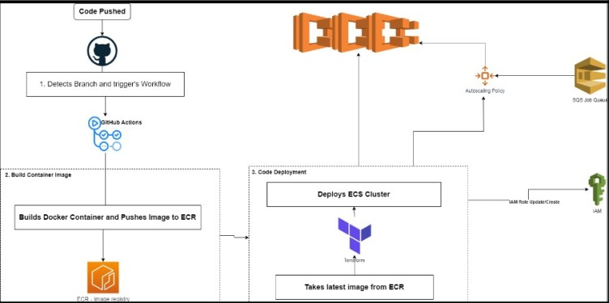

Data Dynamo: Scraper Optimization & Containerization Marvel
Introduction:
In this comprehensive blog post, we delve into the intricacies of "Elevating Efficiency: Scraper Optimization and Containerization Solutions." This insightful exploration navigates through the challenges encountered, the ingenious solutions devised, and the transformative impact of optimizing a web scraper for enhanced efficiency. From outdated data retrieval to inconsistent performance, extended processing times, and the absence of cloud deployment, we dissect the hurdles faced and the innovative steps taken to overcome them. Discover how modularization, AWS integration, automated pipelines, PostgreSQL, and cloud deployment converged to elevate scraper efficiency. Join us on this transformative journey towards streamlining web scraping processes for superior performance and productivity.
Challenges Faced:
- Outdated Data Retrieval: Our existing scraper, built with the Scrapy module in Python, faced difficulties in keeping data current in Elasticsearch.
- Inconsistent Performance: The scraper's functionality was compromised, resulting in inadequate data extraction and processing.
- Extended Processing Time: Data collection for a single customer spanned an entire day, hampering efficiency and productivity.
- Lack of Cloud Deployment: The scraper was limited by its local deployment, missing out on the benefits of cloud scalability and accessibility.
- Manual Workflow: The absence of an automated pipeline added complexity to data acquisition, hindering smooth operations.
Solution:

- Code Modularization: Dissected existing code into distinct components for enhanced clarity and efficiency.
- Scrapy with Subprocess: Utilized a subprocess approach to revitalize the Scrapy spider, boosting performance significantly.
- AWS SQS Integration: Implemented AWS SQS to intelligently manage URLs earmarked for scraping.
- Automated Pipeline: Employed GitHub Actions and Terraform to construct a seamless, automated workflow, minimizing manual intervention.
- PostgreSQL Database: Leveraged PostgreSQL to not only store spider data but also ensure data verification accuracy.
- AWS ECS Deployment: Took advantage of AWS ECS to deploy the code, embracing the cloud's capabilities.
- Autoscaling Excellence: Configured dynamic autoscaling policies for ECS tasks, ensuring optimal performance and resource allocation.
Conclusion:
In the end, we took apart the old way of doing things and put it back together smarter. We made the Scrapy spider work better using a special method. We also made sure the URLs to be scraped were managed well with AWS SQS. Our cool combo of GitHub Actions and Terraform made everything run by itself, saving time and effort. Plus, we used PostgreSQL to keep data safe and accurate. We didn't stop there. By using AWS ECS, we put our code in the cloud, which is like having superpowers. And we set up smart rules so things always ran just right. So, in a nutshell, we made everything work better and faster. It's been quite a journey, and this new way of doing things opens doors for even more improvements down the road.